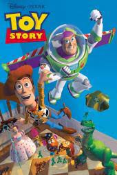

Film

The first full-length CGI movie, Pixar's Toy Story, is released, revolutionizing animated films.
Titanic becomes a cultural phenomenon throughout the world, and eventually becomes the highest-grossing film of all time, grossing over $1.8 billion worldwide.